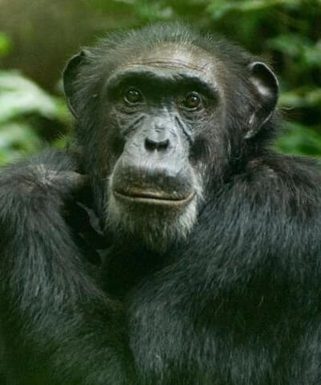

Podela ugroženih životinja

Kritično ugrožene
Kritično ugrožene životinjske vrste
Vrste za koje se smatra da su suočene sa ekstremno visokim rizikom od izumiranja u divljini.
Pročitaj više

Ugrožene
Ugrožene životinjske vrste
Vrste za koje se smatra da su suočene sa veoma visokim rizikom od izumiranja u divljini.
Pročitaj višeRanjive
Ranjive životinjske vrste
Vrste za koje se smatra da su suočene sa visokim rizikom od izumiranja u divljini.
Pročitaj više